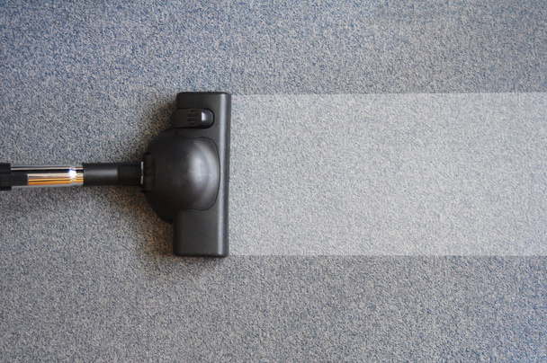

Tips and advice to help you choose, care for, and get the most out of your new floors.
Regular vacuuming prevents grime, dust, and dirt from embedding into your carpet fibers. Weekly vacuuming is one of the simplest things you can do to extend the life of your carpet significantly.
When something spills, dab it up right away — never scrub. Blotting lifts the liquid out; scrubbing pushes it deeper into the carpet. Acting fast prevents permanent staining.
Deep steam cleaning gets embedded particles that regular vacuuming misses. Either rent a steam cleaner from a local hardware store or hire a professional carpet cleaning service to maintain your carpet.
Protect hardwood, laminate, and vinyl floors from scratches by placing felt pads under furniture legs. Replace them regularly as they wear down. Even small scratches from dragged furniture can dull your floor finish.
Excess moisture is the enemy of hardwood and laminate floors. Wipe up spills immediately and use a damp — not wet — mop when cleaning. Standing water can warp planks and cause lasting damage.
Placing area rugs in hallways, entryways, and living rooms protects your floor from heavy foot traffic. Rugs trap dirt before it reaches your floor and also add style to any room.

Caring for Your Carpet
At Clinton Township Carpet and Floors, we hope to be your partners in your carpeting — not just the company that sells it to you. We want to help you pick out the best carpet for you, and for it to last as long as possible.
Making your carpet last is pretty easy. All it takes is a few simple cleaning procedures, and you can increase the life of your carpet by years. Vacuum around once a week, address spills immediately by dabbing (never scrubbing), and deep steam clean 1-2 times a year.
These quick tips go an extremely long way toward keeping your carpet in great shape — looking and feeling fresh for years after other carpets would need replacing. If you're ready for new carpet, give us a call and we'll come to you with our full selection.